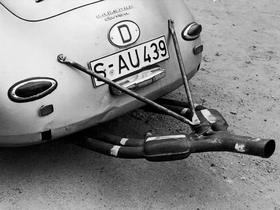

Porsche Exclusive Manufaktur
Porsche Exclusive Manufaktur (PDF; 27 MB)
了解Porsche Exclusive Manufaktur 如何让梦想跃然眼前
我们为您提供了用于量身定制爱车的众多选装备置。美学与技术并重，为你打造完全个性化的座驾
为你量身定制保时捷提供咨询与建议
从特别定制计划到 Porsche Exclusive Manufaktur
起源
"当我环顾四周，却始终无法找到我的梦想之车是，我决定自己打造一辆。"
费迪南德保时捷博士
1950年左右20世纪50代初，在斯图加特-祖文豪森，梦想已经开始成真
1957 年左右 保时捷很早就与赛车运动结下了不解之缘， 以个性化的方式满足了赛车运动的种种需求。 例如，为赛车配备特别设计的排气系统。
1978 年起 特别定制部门正式成立。从这时起，对系列车型的特别改装都在该部门进行。
1983保时捷以单辆生产的方式打造了一辆可以合法上路的 935 型赛车。澎湃的动力和豪华的内饰让这款 935 Street 独树一帜、卓尔不凡。
1989保时捷为一位阿拉伯酋长打造了 7 台 959——时至今日，它们仍然独一无二。
1992–1993 在 1992/93 年，有 86 台出自 911 Turbo S 轻量版，位居保时捷各车型系列之首。始终贯彻的减重理念成就了非凡的行驶性能。
2003室内设计师 Carlo Rampazzi 收到了他梦寐以求的 911 Turbo Cabriolet——车身和内饰全部采用橙色。这个非同寻常的配色方案以他带到祖文豪森的一个盘子为原始模板。
2009–2010 集传统风格和现代时尚于一身的拱顶车型宛如一件艺术品，配备双穹顶、“鸭尾”和 19 英寸 Sport Classic 轮毂。911 Sport Classic edition：250 辆。
2010–2011 一款最能体现 Speedster 传统风格的 911： 车身降低 70 毫米、前挡风玻璃倾斜度加大、动感十足的织物软篷以及双气泡波浪形软篷盖。 生产数量： 356.
2012 65 年前，最初的两家保时捷俱乐部仅有 13 名会员。今天：675 家官方俱乐部，超过 20 万名会员。2012 年，为纪念俱乐部最初的成立而打造了 13 台 911 Club Coupé。
2014–2015 Panamera Exclusive Series：一款限量 100 台的小批车型。别具特色的亮点包括 Poltrona Frau 特制真皮、车身渐变色手工喷漆以及限量版徽章。
2017–2018 272 kW (370 hp)。扭矩 750 Nm。500 辆。以精湛工艺打造轻质结构。碳纤维材质彰显独特个性。为追求卓越性能精益求精。于是，911 Turbo S Exclusive Series 由此诞生。特立独行。